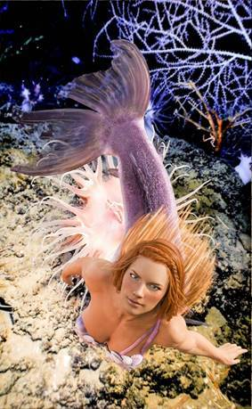

Flow is important. When it comes to attracting your soulmate, you must be easy about it. Flow with the impulses you are receiving. Uncover the truths you’ve kept buried inside. Don’t be afraid to face your beliefs and change the energy.
There is more to you than meets the eye. You are a beautiful, creative soul that is having an experience in this physical plane.
That is how we want you to feel when it comes to your soulmate. Does it feel good? When someone comes into your reality who you pay attention to—does it feel good? Does that person make joy spiral through you? This is a sign to pursue that path.
You are beautiful, perfect, and complete with or without a soulmate. You are a perfect soul, all by yourself. Many say things such as, my other half, and we don’t really enjoy that saying. It creates a reality where it feels like half of you is always missing. You then will draw to you another person who also feels like half is missing.
Instead, be a whole creator, and attract another whole creator. In your joy, together, you can create more joyful experiences.
Be easy about it all. Be joyful about it all. Keep your heart full of joyful expectations, and more joyful things will flow toward you.
Don’t paddle back upstream and fix things from the past. That’ll only leave you clogged up and exhausted. Let go of the expectations, and follow the flow of where you are now.
What do you feel led toward in this moment? Follow that flow. That’s the right spot for you. Maybe it’s not where you want to be in the future, but the spot you are now, will take you to where you want to go next. This process is a step-by-step thing. Many of you live so far in the future, you forget to enjoy the day-to-day creating process. Here’s where we want to help you.
Step into the current you feel, and allow it to lead you to the next step. What feels beautiful in your life right now? What feels happy, joyful, and abundant? If you have a hard time finding that—take a breath. Enjoy your breath. Enjoy the sunshine on your face. Maybe it is a pet, child, or friendship you can dwell on. Whatever it is, enjoy that flow for a while. Get cozy with it.
Be aware of your surroundings, and what’s going on. Let it be fun, joyful, and easy to play with others in your world. This is the flow. The flow feels good. The flow feels nice, easy, and playful.